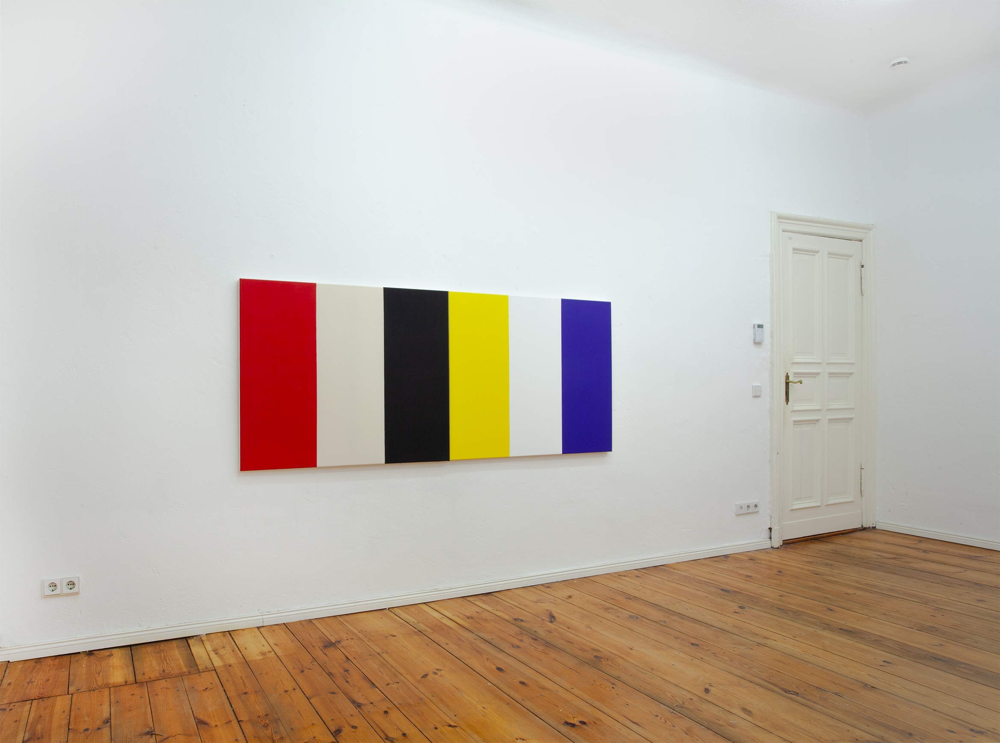
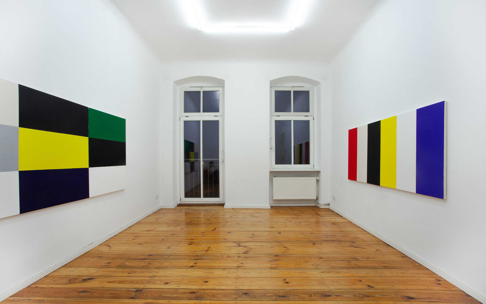
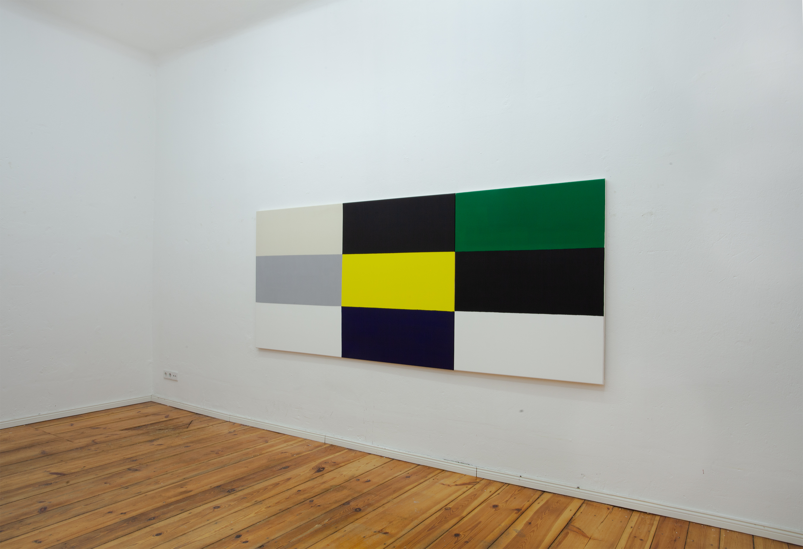
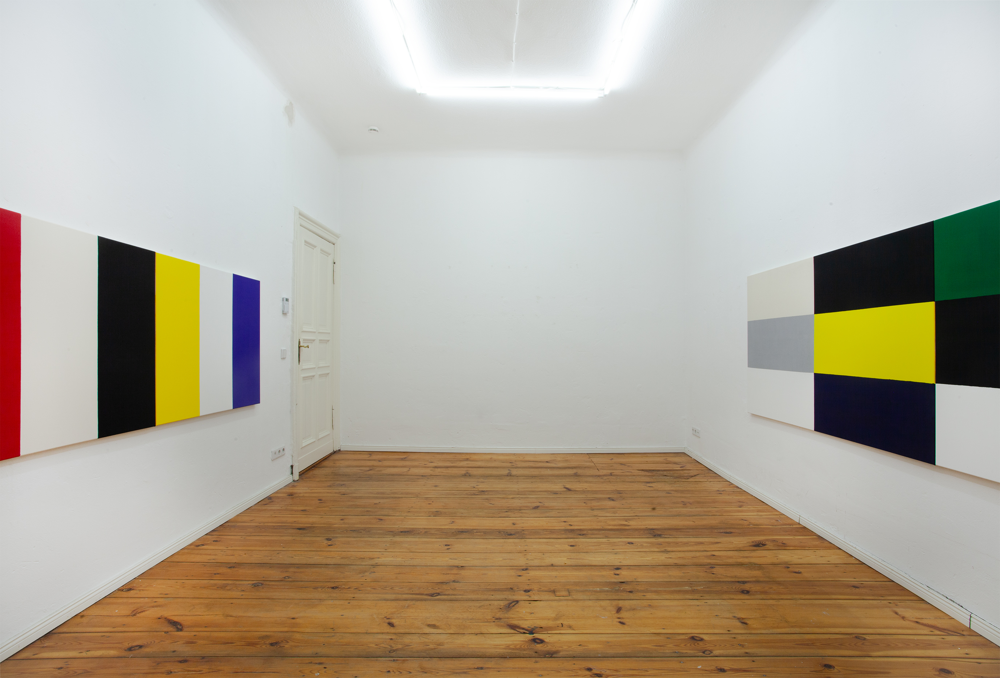

LYCHENER STR8 2 BERLIN
AMERICAN VS EUROPEAN TEACHING AID






American Versus European Teaching Aid
These works raise the issue of whether innovation is possible in obsolete field of praxis – i.e., Ellsworth with breathing tube, inhaling fumes of the past.
We tried in these works to avoid the traps of market abstraction, lobby wallpaper, well-mannered hard-edge, middle aged, docile connoisseurship chips etc. Such deferral to canon is vegetative: take a Kelly, transfer to canvas, switch paper to unprimed cotton. Use Kelly already-made technique to repeat a painting Kelly made after moving away from that technique.
Do we evaluate the current work using frameworks of ’60s hard edge? Or are we to read it another way? If so, what are the cues for this other reading?
One way to approach this work is through the question of competency, in terms of what is competent or what is incompetent about it.
— illustration of model
— issue of quality
— doesn’t engage with social conditions
— Europeanness
— the work requires text to qualify it
The perception of pure colour, freed from social factors, was once tied to rhetorics of emancipation. Once thought of as liberating, these forms here illustrate expired hegemonies of painting, American versus European.
On one side is a replicated Kelly, Red Yellow Blue White Black, 1953, 50.2 × 96.7 centimeters, made by an American painter in France doing American-type art. The Kelly diptych is hung alongside a mutation of the same composition, a nine-panel demonstration of European compositionality or dynamic equilibrium that resembles the end of a Judd container sculpture. The combination of primary (yellow), secondary (green), and tertiary (dark blue-purple) enhances the European-type painting’s mathematical basis. Without the third column (the separate canvas with green panel), this European-type painting evokes the palette of hard-edge canvases painted by Ian Burn between 1965 and 1967 in London, American-type compositions by an Australian in Europe influenced by Mondrian, also Stellas and Nolands seen at Kasmin.
Academic redux of styles brings about change: the artists’ elevation to market prominence, prizes, cultivation of lifestyle above stale bread and the threadbare. Collector decides colour pattern?
There is a question of whether this new work is skeptical or fraudulent. Skeptical means critical use of forms and codes; fraudulent is uncritical use of forms and codes, culture industry.